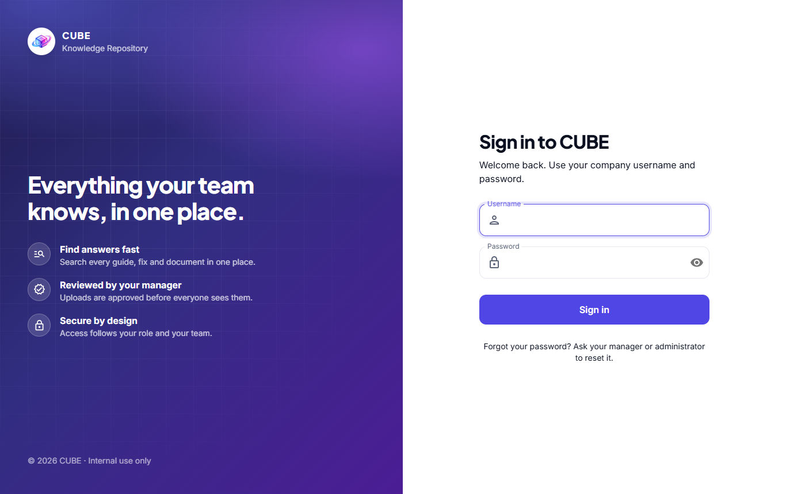
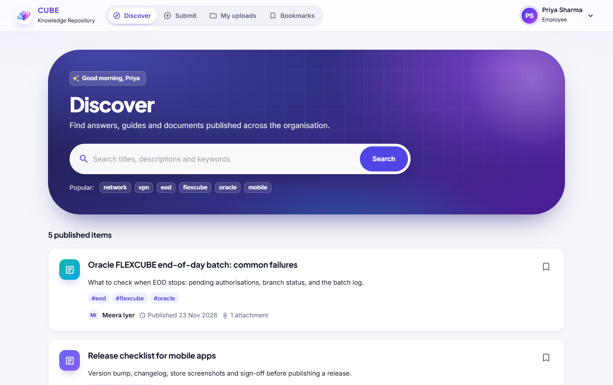
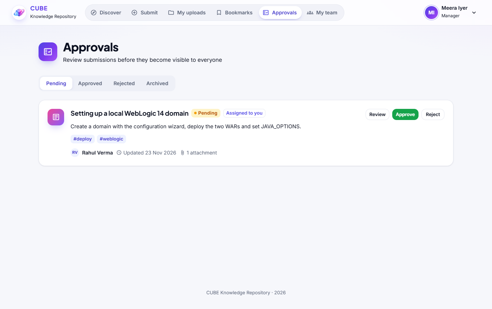
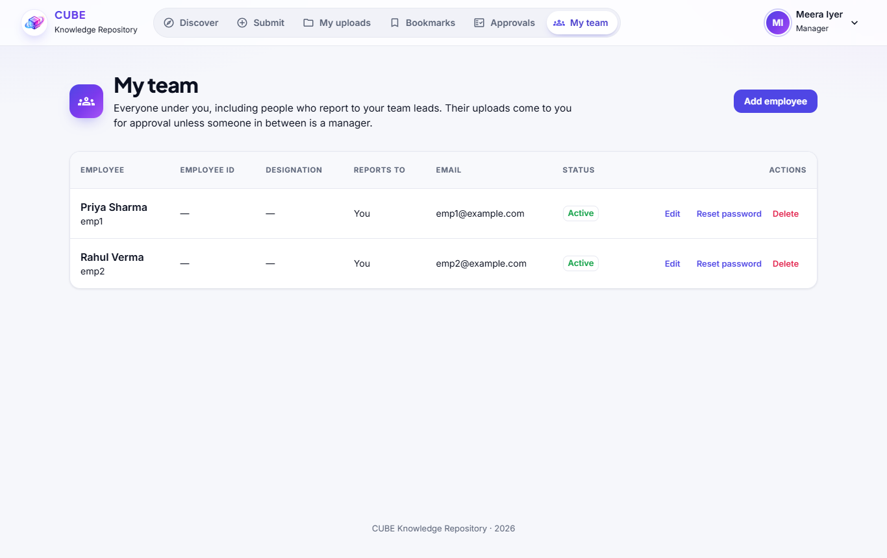
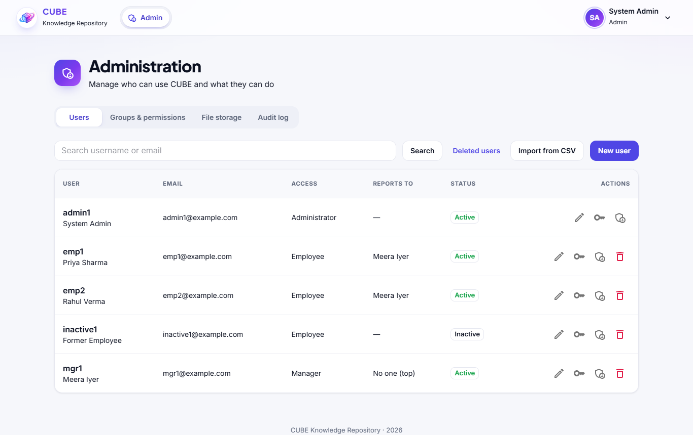
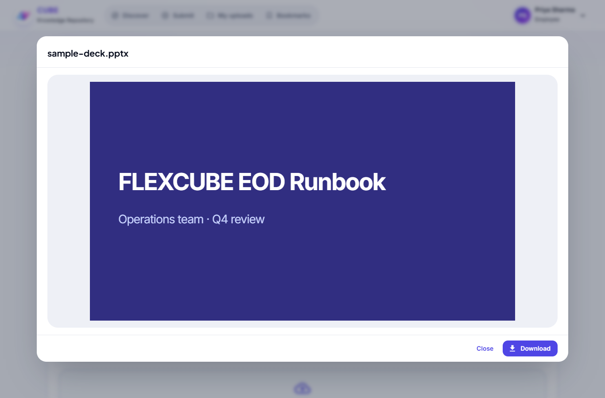
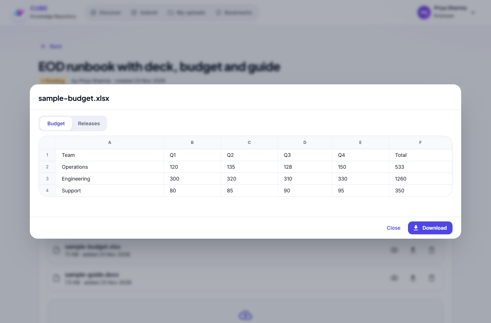
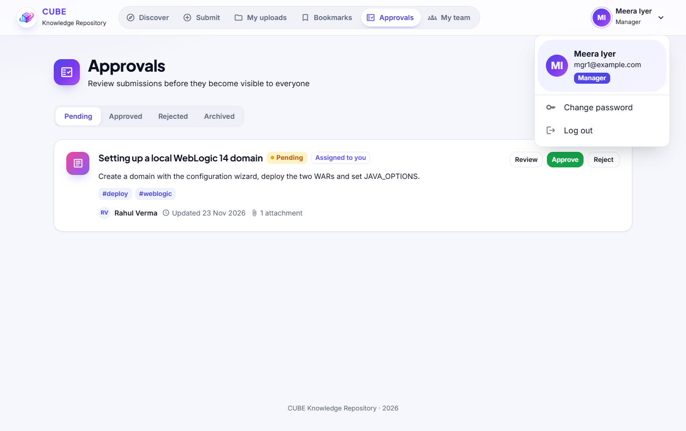

CUBE is the company's internal library of know-how: fixes, guides, runbooks and documents, written by employees, checked by their manager, and searchable by everyone.
Useful knowledge (how to fix an EOD failure, how to set up the VPN, a release checklist) usually lives in people's heads, chats and personal folders. When the person is busy or leaves, the knowledge is gone. CUBE gives it one home with three guarantees:
Every web application, CUBE included, is four parts talking to each other in a fixed order. Understanding these four parts is enough to understand everything else in this document.
The screens people see: buttons, forms, lists. It is a React application: a bundle of HTML, CSS and JavaScript that WebLogic serves from frontend.war at /frontend. It holds no data of its own; it asks the server for everything and shows the answer. It checks forms early (e.g. "Add at least one keyword") only to save the user a round-trip; the server checks again.
A Spring Boot program in cube.war at /cube. It exposes an API: a list of addresses like POST /cube/api/v1/knowledge/submit. For every request it answers three questions: Who is this? (login token), Are they allowed? (permissions) and Is the request valid? (business rules). Only then does it read or write the database.
Oracle schema CUBEDB keeps every fact as rows in tables: users, roles, knowledge items, keywords, who reports to whom, the audit trail. Tables link to each other through ID numbers. Writes happen inside a transaction: either all rows of one action are saved, or none.
Attachments (PDF, Word, PowerPoint...) are not kept inside the database. They go to the private GitHub repository 103sunil/cube-attachments. The database stores only the file's name, size, type and its path in GitHub, so the database stays small and fast.
Two files are deployed on one WebLogic server. Because both live on the same address, the browser talks to the API directly without any cross-site setup.
http://SERVER:PORT/frontend/; the screens call /cube/api/v1/... on the same server.| Layer | What it does | Examples |
|---|---|---|
| Security filter | Runs before anything else on every request. Reads the token from the Authorization header, verifies its signature and expiry, rejects logged-out tokens, loads the user and their permissions. | JwtFilter, SecurityConfig |
| Controllers | Map each web address to a Java method and convert JSON in and out. No business logic. | KnowledgeController, AttachmentController, TeamController, admin controllers |
| Services | The rules: who may approve, required fields, the reporting ladder, routing uploads to the right approver, writing the audit log. Each runs in a database transaction. | KnowledgeService, ReviewRouting, AdminUserService, TeamService |
| Repositories & storage | Turn Java objects into SQL against Oracle; send files to GitHub (or read older files from their old location). | KnowledgeRepository, KnowledgeSearchRepository, GitHubFileStorageService |
A single-page React application (React 19 + Material UI). One page loads once; after that, moving between Discover, Approvals and the other screens only swaps the visible component and calls the API. The menu is built from the user's permissions, so people only see what they may use. Office viewers (Word, Excel, PowerPoint) are loaded only when someone opens a preview, keeping the first load fast.
Two separate ideas decide a person's place in CUBE: their access (what the software lets them do) and their reporting line (whose team they are in, and who approves their uploads).
A permission is written MODULE:ACCESS. CUBE has two modules and 13 access codes:
| Module | Access codes |
|---|---|
| KNOWLEDGE | CREATE (submit) · VIEW · SEARCH · DOWNLOAD · APPROVE · UPDATE · DELETE |
| AUTH | MANAGE_USERS · MANAGE_GROUPS · MANAGE_MODULES · MANAGE_ACCESS · MANAGE_GROUP_ACCESS · MANAGE_USER_ACCESS |
Each person belongs to exactly one group; each group is granted a set of access codes:
| Group (shown as "Access") | Granted | Sees in the menu |
|---|---|---|
| Employee | KNOWLEDGE: CREATE, VIEW, SEARCH, DOWNLOAD | Discover, Submit, My uploads, Bookmarks |
| Manager / VP | all KNOWLEDGE codes incl. APPROVE, UPDATE, DELETE | + Approvals, My team |
| Administrator | all AUTH codes | Admin only |
Effective permissions = the group's granted codes, then per-person overrides (grant or remove one code, optionally until a date). Inactive modules, codes or groups count as not granted. All of this lives in tables, so an administrator can change who can do what in Admin → Groups & permissions without any code change.
Every person can have a Reports to (their manager) and a Designation (job title). The designation places them on a ladder:
| Level | Designations |
|---|---|
| 7 | Senior Vice President |
| 6 | Vice President |
| 5 | Senior Manager, Director |
| 4 | Manager, Head (also anyone with Manager access and no recognised title) |
| 3 | Team Lead |
| 2 | Senior Employee |
| 1 | Employee, Consultant, Intern, other titles |
The nearest person above the author who has Manager / VP access. Example: Rahul (Consultant) → Akshay (Team Lead, employee access) → Suresh (Manager): Akshay is skipped and Suresh approves. If Akshay later gets manager access, Rahul's uploads go to Akshay. When someone moves or leaves, their waiting uploads are re-routed automatically. Uploads by managers publish directly.
All tables live in the Oracle schema CUBEDB and start with CU_. IDs are generated by Oracle (identity columns). Row counts are from CUBEDB on 23 Nov 2026.
| Table | What it is for | Important columns | Rows |
|---|---|---|---|
| CU_USER_MASTER | Every person who can sign in. Also holds their place in the hierarchy and job title. Deleted leavers stay as status D (their history remains valid) until purged. | USER_ID, USERNAME (unique), EMAIL (unique), PASSWORD_HASH (BCrypt), STATUS A/I/D, REPORTING_MANAGER_ID, EMPLOYEE_CODE, DESIGNATION, MUST_CHANGE_PASSWORD | 6 |
| CU_USER_GROUP | Which group (role) each person is in: exactly one per person. | USER_ID (key), GROUP_ID, STATUS | 6 |
| CU_GROUP_MASTER | The roles: ADMIN, EMPLOYEE, MANAGER. | GROUP_ID, GROUP_CODE (unique), GROUP_NAME, STATUS | 3 |
| CU_MODULE_MASTER | Areas of the application permissions belong to: KNOWLEDGE and AUTH. | MODULE_ID, MODULE_CODE (unique), STATUS | 2 |
| CU_ACCESS_MASTER | The 13 individual permissions (CREATE, APPROVE, MANAGE_USERS...), each inside a module. | ACCESS_ID, MODULE_ID, ACCESS_CODE (unique per module), STATUS | 13 |
| CU_GROUP_ACCESS_TEMPLATE | The role's permission list: group × access code, allowed Y/N. | GROUP_ID + ACCESS_ID (key), ALLOWED, STATUS | 18 |
| CU_USER_ACCESS | Exceptions for one person: grant or remove a single permission, optionally until an expiry date. | USER_ID + ACCESS_ID (key), ALLOWED, EXPIRY_DATE | 0 |
| Table | What it is for | Important columns | Rows |
|---|---|---|---|
| CU_KNOWLEDGE | One row per knowledge item, with its workflow status and who reviews it. SEARCH_TEXT joins title, description and keywords and is indexed by Oracle Text for search. | KNOWLEDGE_ID, TITLE, DESCRIPTION, STATUS (DRAFT/PENDING/PUBLISHED/REJECTED/ARCHIVED), CREATED_BY, ASSIGNED_REVIEWER_ID, REVIEWED_BY, REJECTION_REASON, PUBLISHED_AT, SEARCH_TEXT | 106 |
| CU_KEYWORD | Each distinct keyword once, so the same tag is shared by many items. | KEYWORD_ID, KEYWORD_NAME (unique) | 165 |
| CU_KNOWLEDGE_KEYWORD | Links items to keywords (many-to-many). | KNOWLEDGE_ID + KEYWORD_ID (key) | 214 |
| CU_ATTACHMENT | File details for each attachment. The file itself is in GitHub; ONEDRIVE_FILE_ID (name kept from the old version) holds its GitHub path. Two very old files still sit in FILE_DATA (BLOB). | ATTACHMENT_ID, KNOWLEDGE_ID, FILE_NAME, CONTENT_TYPE, FILE_SIZE, ONEDRIVE_FILE_ID, UPLOADED_BY, UPLOADED_AT | 138 |
| CU_BOOKMARK | Items a person saved for later. | USER_ID + KNOWLEDGE_ID (key), CREATED_AT | 2 |
| Table | What it is for | Important columns | Rows |
|---|---|---|---|
| CU_AUDIT_LOG | Permanent trail of important actions: logins (and failed ones), submissions, approvals, rejections, user changes, imports, password changes, deletions. | ACTOR, ACTION, ENTITY_TYPE, ENTITY_ID, DETAILS, CREATED_AT | 167 |
| CU_REVOKED_TOKEN | Login tokens that were ended by "Log out", so they cannot be reused before they expire. | TOKEN_ID (the token's unique id), USERNAME, EXPIRES_AT, REVOKED_AT | 2 |
CU_KNOWLEDGE_SEARCH_IDX is an Oracle Text index on CU_KNOWLEDGE.SEARCH_TEXT, updated automatically on every commit. Oracle keeps it in 4 internal tables (DR$CU_KNOWLEDGE_SEARCH_IDX$…) that the application never touches directly.The STATUS column of CU_KNOWLEDGE is the item's position in this flow. Only the transitions shown are allowed; the server refuses anything else.
| Status | Who sees it | Rules |
|---|---|---|
| DRAFT | Only the author | Only a title is required. Can be edited freely. |
| PENDING | Author and the assigned approver | Needs title, description, ≥ 1 keyword, ≥ 1 attachment. The last attachment cannot be removed. |
| PUBLISHED | Everyone with VIEW | Appears in Discover and search; can be bookmarked. |
| REJECTED | Author and reviewers | Shows the reason; the author edits and resubmits. |
| ARCHIVED | Reviewers | Hidden from Discover; can be restored. |
Each trace follows one real action from the click on the screen, through the server, into the database (and GitHub), and back. Labels show where each step happens: Screen Server Database GitHub
POST /cube/api/v1/auth/login with {"username","password"}.PASSWORD_HASH using BCrypt (the real password is never stored). Wrong → "Invalid username or password" and an audit row LOGIN_FAILED. Status I (inactive) or D (deleted) → refused.GET /me (name, email, designation, must-change-password) and GET /me/permissions.CU_USER_GROUP → its grants in CU_GROUP_ACCESS_TEMPLATE → codes in CU_ACCESS_MASTER / CU_MODULE_MASTER → then personal overrides from CU_USER_ACCESS.MUST_CHANGE_PASSWORD = 'Y' (temporary password), the "Choose your own password" screen appears first.Authorization: Bearer <token>.CU_USER_MASTER: if they were deactivated or deleted a minute ago, the request is refused immediately.Rahul (Consultant, reports to Akshay, Team Lead, who reports to Suresh, Manager) submits "EOD runbook" with two keywords and a PowerPoint file.
POST /knowledge/submit as a multipart form: title, description, keywords, files.KNOWLEDGE:CREATE, cleans the title (≤ 255), keywords (deduplicated, ≤ 50 characters each) and files (≤ 10 MB, ≤ 20 per request).CU_KEYWORD, then links them in CU_KNOWLEDGE_KEYWORD.attachments/knowledge/<id>/<random>_EOD.pptx in the private repository (GitHub Contents API, using the token bundled in cube.war).KNOWLEDGE_SUBMIT; the transaction commits; Oracle Text indexes SEARCH_TEXT at commit. If anything fails, nothing is saved and files already sent to GitHub are removed again.GET /knowledge?status=PENDING.POST /knowledge/{id}/approve.KNOWLEDGE:APPROVE, that the item is still PENDING, and that he is the assigned reviewer (another manager gets "not found").KNOWLEDGE_APPROVE. Rejecting instead sets STATUS = 'REJECTED' and stores the required reason.GET /knowledge/search?q=flex runbook.KNOWLEDGE:SEARCH, splits the words, escapes each character so words like OR/AND are never treated as commands, and adds a wildcard so each word matches the start of words.LOWER(SEARCH_TEXT) LIKE '%cube%'), so "cube" still finds "flexcube".GET /attachments/{id}/download: checks KNOWLEDGE:DOWNLOAD and that the user may see the item (published, or their own, or they are its reviewer).CU_ATTACHMENT to find where the bytes live.POST /team: checks APPROVE, that Akshay is in Suresh's hierarchy, the ladder rule (Team Lead ≥ Consultant), and that username, email and Employee ID are unique.USER_CREATE.STATUS = 'D': they can no longer sign in (even with an open session) and disappear from lists. Their published knowledge stays. An admin can Restore them, or remove them permanently later with script 06 (their items are handed to a chosen owner).| Concern | How CUBE handles it |
|---|---|
| Passwords | Stored only as BCrypt hashes. Temporary passwords (new accounts, resets, CSV import) must be changed at first sign-in. 5 wrong attempts lock that username for 15 minutes. |
| Sessions | Signed JWT tokens valid for 1 hour; "Log out" revokes the token in CU_REVOKED_TOKEN; deactivated or deleted users are blocked on their next request. |
| Permissions | Checked on the server for every request; the menu only hides what the server would refuse anyway. Items a user may not see are reported as "not found". |
| Approvals | Only the assigned approver can approve or reject; a reason is required to reject. |
| Files | Stored in a private GitHub repository; the token sits only inside cube.war and in a git-ignored file, never in the source repository. 10 MB per file. File names are cleaned. |
| Document preview | Office files are rendered in the browser; embedded HTML is disabled and javascript: links removed. Viewer libraries are pinned to patched versions (0 known vulnerabilities in shipped code). |
| Search | User input is escaped character by character before it reaches Oracle Text; all SQL uses bound parameters. |
| Traceability | Logins, failed logins, submissions, approvals, rejections, deletions, user and permission changes are written to CU_AUDIT_LOG (Admin → Audit log). |
| Database outage | If the database cannot be reached (e.g. VPN down), requests fail within ~10 seconds with a clear message instead of hanging. |
Screenshots from the current version (demo data).








backend/target/cube.war (context root /cube). Check http://SERVER:PORT/cube/api/v1/health returns {"status":"UP"}.frontend/frontend.war (context root /frontend) and open http://SERVER:PORT/frontend/.Everything needed is inside the WAR files: database address and account (CUBEDB at 10.20.5.10:1521/FCUBS147X), GitHub repository, branch and token, and the token-signing secret. The secrets are in a separate git-ignored file bundled into cube.war. Any value can still be overridden on a server with -DNAME=value (e.g. -Dhttps.proxyHost if the server needs a proxy to reach GitHub).
| Script | Purpose | On CUBEDB |
|---|---|---|
00_upgrade_existing_cubedb.sql | Upgraded the previous version's schema in place; nothing deleted. | Run |
04_reporting_manager.sql | Reporting manager, assigned reviewer, bookmarks. | Run |
05_employee_details.sql | Employee ID, designation, must-change-password. | Run |
06_purge_deleted_users.sql | Permanently removes deleted users; hands their items to a chosen owner. | Run when needed |
01_schema, 02_seed, 03_oracle_text | Only for a brand-new empty schema (another environment). | Never |
| Part | Technology |
|---|---|
| Backend | Java 8, Spring Boot 2.7, Spring Security, Hibernate/JPA, JWT (jjwt), Oracle JDBC |
| Frontend | React 19, Material UI, React Router; docx-preview, pptx-preview, read-excel-file for previews; built with Vite |
| Database | Oracle (schema CUBEDB) with Oracle Text |
| Files | GitHub private repository via the GitHub REST API |
| Server | Oracle WebLogic 14.1.1.0.0 |
| Quality | 33 backend tests (JUnit, in-memory database), 43 frontend tests (Vitest), ESLint |
api.github.com (possibly through the company proxy).cube-secrets.properties and rebuild cube.war.All addresses start with /cube/api/v1. Every endpoint except login and health requires a valid token.
| Area | Endpoints |
|---|---|
| Sign in & me | POST /auth/login · POST /auth/logout · GET /me · GET /me/permissions · POST /me/password · GET /health |
| Knowledge | GET /knowledge/published · GET /knowledge/search · GET /knowledge/mine · GET /knowledge?status= · GET /knowledge/{id} · POST /knowledge/draft · POST /knowledge/submit · PUT /knowledge/{id} · POST /knowledge/{id}/submit · POST /knowledge/{id}/approve · POST /knowledge/{id}/reject · POST /knowledge/{id}/archive · POST /knowledge/{id}/restore · DELETE /knowledge/{id} |
| Bookmarks | GET /knowledge/bookmarks · PUT /knowledge/{id}/bookmark · DELETE /knowledge/{id}/bookmark |
| Attachments | GET /knowledge/{id}/attachments · POST /knowledge/{id}/attachments · GET /attachments/{id}/download · GET /attachments/{id}/preview · DELETE /attachments/{id} |
| My team | GET /team · GET /team/managers · POST /team · PUT /team/{id} · PUT /team/{id}/password · DELETE /team/{id} |
| Admin – users | GET /admin/users · GET /admin/users/{id} · POST /admin/users · PUT /admin/users/{id} · DELETE /admin/users/{id} · POST /admin/users/{id}/restore · PUT /admin/users/{id}/password · POST /admin/users/import · GET /admin/users/options · GET /admin/users/approvers · GET /admin/users/{id}/permissions · GET|PUT /admin/users/{id}/overrides · DELETE /admin/users/{id}/overrides/{module}/{access} |
| Admin – groups | GET|POST /admin/groups · GET|PUT|DELETE /admin/groups/{id} · GET|PUT /admin/groups/{id}/grants · DELETE /admin/groups/{id}/grants/{module}/{access} |
| Admin – catalogue | GET|POST /admin/modules · PUT|DELETE /admin/modules/{id} · GET|POST /admin/access-codes · PUT|DELETE /admin/access-codes/{id} |
| Admin – storage & audit | GET /admin/storage/status · POST /admin/storage/migrate · GET /admin/audit |